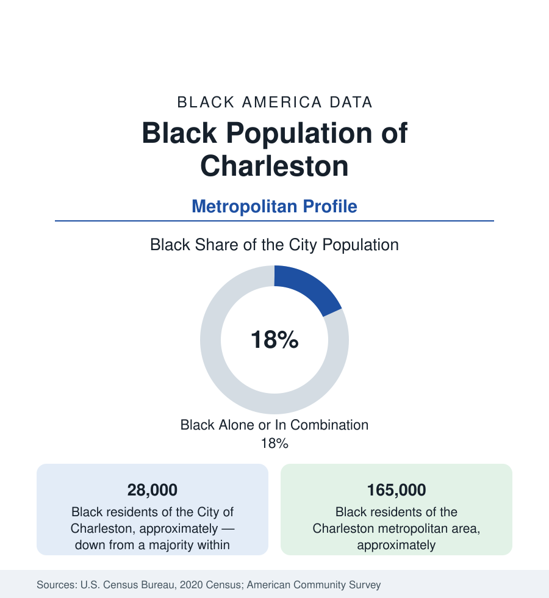

Black Cities
Black Charleston: The Peninsula's Great Dispersal and the Gullah Coast's Anchor
Charleston's Black share fell from a majority to under a fifth of the city — while the metro's Black population grew in North Charleston and the suburbs. The census profile.

Charleston presents the most dramatic dispersal data in this section. The city proper — the peninsula — was majority-Black from its founding era into the late twentieth century; the 2020 census counts Black Charlestonians at about 28,000, under a fifth of the city's 150,000 people. Yet the metropolitan area's Black population is about 165,000 and growing. The community did not vanish; it moved — to North Charleston, the suburbs, and the Sea Island corridor — and the peninsula's transformation became the national case study of heritage-city gentrification.
The Peninsula's Transformation
Historic Black Charleston occupied the peninsula's East Side and its upper wards — the neighborhoods around the Avery Institute (the 1865 school that educated the city's Black professional class, now a research center), the old Fourth Ward, and the crosstown districts — in a city where Black craftsmen, stevedores, and domestics formed the working majority and Black churches (Mother Emanuel AME, the 1816 congregation) anchored civic life. The dispersal's mechanisms are documented in sequence: the port and military economy's shifts, the bridge-era suburbanization, and then the peninsula's repricing as one of America's premier heritage-tourism and second-home markets — property values and taxes rising past fixed incomes, the heirs'-property parcels of the rural profile selling under pressure, the small Black districts (the East Side holding the largest remnant) shrinking census by census until the East Side itself became the appreciation frontier. The city's Black political geography inverted in the same decades: representation moved from the peninsula's wards to the metro's, and the community's institutional center of gravity followed the population north.
North Charleston and the Modern Map
North Charleston — the independent city incorporated in 1972 — is now the metro's Black center: roughly 45,000 to 50,000 Black residents, around two-fifths of its population, in the districts around the old naval base (whose 1996 closure was the region's economic earthquake and whose redevelopment is its largest current project), Park Circle's orbit, and the Rivers Avenue corridor. Summerville and Goose Creek hold the suburban growth (the master-planned Nexton and Cane Bay economies), Mount Pleasant — across the harbor, historically a Gullah community's town (the sweetgrass basket stands along Highway 17) — records a small Black share against its size, its historic Black settlements (Scanlonville, Snowden) negotiating survival inside the metro's priciest suburb, and the Sea Islands (James, Johns, Wadmalaw) hold the rural Gullah communities of the corridor in the ACS's small-area counts. Charleston Southern and the Citadel sit in the northern corridor; the College of Charleston anchors the peninsula's student layer.
The Gullah Geechee Anchor
Charleston is the metropolitan capital of the Gullah Geechee Cultural Heritage Corridor — the federally designated coastal zone of the South Carolina state profile — and its Black culture is the corridor's institutional seat: the Avery Research Center's archives, the basket-sewers' cooperatives and highway stands, the praise houses and the language's academic home, the International African American Museum (opened 2023 at Gadsden's Wharf, the disembarkation point of a vast share of enslaved Africans brought to North America) as the heritage economy's defining institution. The museum's opening converted the city's founding fact into its newest cultural economy line — in a metro whose Black population now mostly visits the peninsula for it. The tourism data register the shift: heritage tourism is among the region's fastest-growing visitor segments, and its workforce and ownership data are the file's current argument.
Indicators and Change
The metro's Black indicators split by the dispersal line: peninsula legacy homeowners hold appreciated assets on fixed incomes (the tax-relief programs' caseloads); North Charleston's districts record the working- and middle-class medians of a military-port economy in transition; the Boeing and Volvo plants, the port's expansion, and the medical university distribute the current employment. The estimates show the metro among the South's fastest-growing overall, its Black growth suburban (Dorchester County fastest), the peninsula's Black share still easing downward, and the sea-level file — Charleston floods on sunny days now — distributing the climate argument across the same low ground the East Side occupies.
Reading the Charleston Numbers
Charleston's data teach the section's sharpest lesson in reading a share: under a fifth in the city, a fifth and growing in the metro, a majority in the memory. The Black Charleston that built the peninsula now lives around it — in North Charleston's districts and the islands' remaining ground — while the world's visitors tour the streets its grandparents swept. The tables hold both facts at once, and both are Charleston.
More in Black Cities
Black Atlanta: Population, Distribution, and Growth of a Black Metropolis
Metro Atlanta holds more than two million Black residents — roughly one in three, second only to New York. The suburban distribution, migration history, and composition of Black Atlanta in the census data.
Black New York: The Largest Black Population in America
The New York metropolitan area holds about 3.4 million Black residents — more than any metro in the nation — and the city itself about two million. The census profile.
Black Washington: The District and the Metro
The Washington metro holds about 1.6 million Black residents, and the District itself — long a majority-Black city — now records a Black share near 41 percent. The census profile.
Source: U.S. Census Bureau, 2020 Census; American Community Survey; Population Estimates Program.